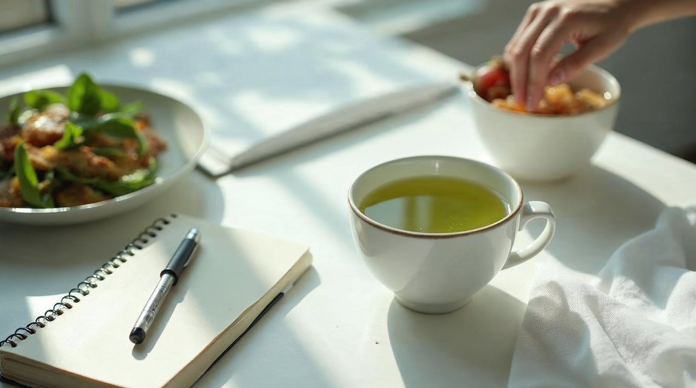

이종호 한의사 감수좋은꿈참사랑한의원 대표원장 (한의사 면허번호 19769)발행 2026-11-26 · 수정 2026-11-26
이 글의 차례
검사실을 나서며 결과지를 다시 펼쳐 봅니다. 심전도도 괜찮고, 심장 초음파도 이상이 없다고 합니다. 분명 다행인 일인데 마음은 개운하지 않습니다. 엘리베이터를 기다리는 동안에도 가슴 한가운데가 묵직하게 눌리는 느낌이 그대로 남아 있기 때문입니다.
진료실에서 이런 말씀을 자주 듣습니다. "심장은 괜찮다는데 그럼 이건 뭔가요. 꾀병처럼 보일까 봐 어디 가서 말도 못 하겠어요." 아픈 것은 분명한데 이름이 붙지 않으니, 몸보다 마음이 먼저 지치는 경우가 많습니다.
심장 검사에서 큰 문제가 없다는 것은 아주 중요한 출발점입니다. 그 확인이 있었기에 이제는 다른 갈래를 차분히 살펴볼 수 있습니다. 가슴에는 심장만 있는 것이 아니라 식도와 위, 갈비뼈와 그 사이 근육, 숨을 쉬게 하는 근육, 신경이 함께 지나갑니다.
이렇게 심장이 아닌 곳에서 오는 가슴 통증을 흔히 비심장성 흉통이라고 부릅니다. 생각보다 흔하고, 원인이 한 가지가 아니라 두세 가지가 겹쳐 있는 경우도 많습니다. 그래서 진료실에서는 언제, 어떤 자세에서, 무엇을 먹고 난 뒤에 아픈지를 하나씩 여쭤봅니다.
비심장성 흉통은 어떤 통증인가요
비심장성 흉통은 하나의 병 이름이라기보다, 심장을 살펴보았는데 큰 문제가 없을 때 쓰는 큰 묶음입니다. 그 안에는 식도에서 오는 통증, 갈비뼈와 근육에서 오는 통증, 숨과 긴장에서 오는 통증이 섞여 있습니다.
통증의 모양도 다양합니다. 쥐어짜듯 조인다는 분, 바늘로 콕콕 찌른다는 분, 명치 위가 화끈하게 타오른다는 분, 숨을 들이쉴 때만 걸린다는 분이 계십니다. 이 표현 하나하나가 어느 갈래에 가까운지 알려 주는 단서가 됩니다.
아프다는 사실은 진짜입니다. 검사에 잡히지 않았다고 해서 상상으로 만든 통증이 아닙니다. 다만 아픈 이유가 심장이 아닌 다른 곳에 있다는 뜻이고, 그 이유를 찾아 생활을 조금씩 바꾸면 불편이 줄어드는 경우가 많습니다.
왜 심장이 괜찮은데도 가슴이 아플까요
가장 흔한 이유 가운데 하나는 식도입니다. 위산이 식도로 올라오면 명치 위나 가슴 한가운데가 타는 듯 아프거나 조이는 느낌이 들 수 있습니다. 식도는 심장 바로 뒤를 지나가기 때문에, 몸이 느끼기에는 심장 통증과 비슷하게 다가오기도 합니다.
두 번째는 가슴 벽, 곧 갈비뼈와 그 사이 근육, 갈비뼈가 가슴뼈에 붙는 연골입니다. 무거운 짐을 들었거나 기침을 오래 했거나, 한쪽으로 오래 몸을 비틀고 일한 뒤에 생기는 경우가 많습니다. 이때는 손가락으로 누르면 아픈 자리가 뚜렷한 편입니다.
세 번째는 숨과 긴장입니다. 마음이 쫓기는 시기에는 숨이 얕아지고 어깨와 가슴 근육이 굳습니다. 가슴 위쪽으로만 숨을 쉬는 습관이 이어지면 가슴 근육이 지치고, 그 피로가 조이는 통증으로 느껴질 수 있습니다.
여기에 걱정이 더해지면 통증은 더 크게 느껴집니다. 가슴이 아프면 혹시 심장이 아닐까 겁이 나고, 겁이 나면 숨이 얕아지고 근육이 더 굳습니다. 이 고리가 반복되면서 검사는 정상인데 통증은 계속되는 상태가 만들어지기도 합니다.
갈래별로 이렇게 나눠 봅니다
식도에서 오는 경우
식사 뒤나 눕고 나서 심해지고, 신물이 올라오거나 목이 칼칼하고 트림이 잦은 경우가 많습니다. 기름진 음식, 커피, 술, 늦은 야식 뒤에 두드러지기도 합니다. 소화기내과에서 내시경 등 검사를 먼저 받아 보시도록 권하는 갈래입니다.
가슴 벽에서 오는 경우
손가락으로 누르면 같은 자리가 아프고, 몸을 돌리거나 팔을 들 때, 깊이 숨을 들이쉴 때 찌릿합니다. 아픈 자리가 손가락 한두 개로 가리킬 만큼 좁은 경우가 많습니다. 갈비뼈를 부딪힌 적이 있는지도 함께 여쭙니다.
숨과 긴장에서 오는 경우
바쁜 날이나 사람을 만난 뒤에 심해지고, 한숨이 잦고 가슴이 꽉 찬 느낌이 함께 옵니다. 쉬는 날이나 여행 중에는 덜하다는 분이 많습니다. 어깨와 목이 늘 굳어 있고, 잠을 설치는 경우도 흔합니다.
등과 목에서 내려오는 경우
등 위쪽이나 목의 근육과 관절이 굳으면 그 신경이 지나가는 가슴 앞쪽으로 통증이 번지기도 합니다. 오래 고개를 숙이고 일하는 분, 한쪽 어깨에만 가방을 메는 분에게서 자주 봅니다. 등을 펴거나 돌릴 때 가슴이 같이 당긴다는 표현이 단서가 됩니다.
스스로 점검해 보세요
아래 질문에 답해 보시면 어느 갈래에 더 가까운지 조금 보입니다. 한 사람에게 두세 갈래가 겹쳐 있는 경우도 흔하니, 하나만 골라야 한다고 생각하지 않으셔도 됩니다.
- 식사 뒤나 누웠을 때 더 아픈가요?
- 손가락으로 누르면 아픈 자리가 있나요?
- 몸을 돌리거나 팔을 들 때 더 아픈가요?
- 바쁘고 긴장한 날에 더 심한가요?
- 쉬는 날이나 여행 중에는 덜한가요?
- 한숨이 잦고 숨이 얕다고 느끼시나요?
답이 여러 갈래에 걸쳐 있어도 괜찮습니다. 그 답들을 적어 오시면 진료실에서 이야기를 시작하기가 훨씬 수월합니다.
헷갈리기 쉬운 다른 경우
가슴 한쪽 피부가 따갑고 화끈거리다가 며칠 뒤 띠 모양으로 물집이 올라오는 경우가 있습니다. 대상포진은 물집이 보이기 전부터 통증이 먼저 오기도 해서, 처음에는 가슴 통증으로만 느껴질 수 있습니다. 피부를 스치기만 해도 쓰라리다면 이 갈래도 떠올려 봅니다.
기침을 오래 한 뒤에는 갈비뼈 사이 근육이 지쳐 숨 쉴 때마다 결리기도 합니다. 감기나 폐렴을 앓고 난 뒤라면 그 경과를 함께 여쭙니다. 담석이나 위의 불편이 명치 위로 올라와 가슴 아래쪽 통증처럼 느껴지는 경우도 있어, 식사와의 관계를 꼼꼼히 봅니다.
왜 밤이나 새벽에 더 신경 쓰일까요
낮에는 일과 사람에 마음이 쏠려 있다가, 밤에 누우면 몸의 감각이 크게 들어옵니다. 누운 자세에서는 위산이 식도로 올라오기도 쉽습니다. 그래서 밤에만 가슴이 아프다는 분은 저녁 식사 시각과 베개 높이를 먼저 함께 살펴봅니다.
새벽에 통증으로 깨면 다시 잠들기 어렵고, 잠이 부족하면 다음 날 통증을 더 예민하게 느끼게 됩니다. 잠과 통증이 서로를 키우는 고리입니다. 이럴 때는 통증만 보지 않고 잠의 흐름도 같이 정리하는 것이 도움이 됩니다.
숨 쉬는 모양도 함께 봅니다
진료실에서 이야기를 나누다 보면 가슴이 아프다는 분들 가운데 숨을 쉴 때 배는 거의 움직이지 않고 가슴 위쪽과 어깨만 오르내리는 분이 많습니다. 이렇게 숨을 쉬면 목과 가슴 위쪽 근육이 하루 종일 일하게 되고, 저녁이 되면 그 근육들이 뻐근하게 지칩니다.
거울 앞에 서서 한 손은 가슴에, 한 손은 배에 얹고 숨을 쉬어 보세요. 가슴 쪽 손만 움직인다면 숨이 위쪽에 몰려 있다는 뜻입니다. 배 쪽 손이 천천히 오르내리도록 연습하면, 가슴 근육이 쉴 틈이 생깁니다.
처음에는 어색하고 오히려 숨이 답답하게 느껴질 수 있습니다. 하루 몇 분씩, 편안한 자세에서 조금씩 익혀 가면 됩니다. 억지로 깊게 들이마시기보다 내쉬는 숨을 천천히 길게 하는 쪽에 마음을 두시면 한결 수월합니다.
커피와 식사 시간도 다시 봅니다
빈속에 마시는 진한 커피는 위와 식도를 자극하고, 가슴이 두근거리는 느낌까지 더할 수 있습니다. 하루 커피를 몇 잔 드시는지, 몇 시에 마시는지 적어 보시면 통증이 심한 날과 겹치는지 보입니다. 식사를 거르고 커피로 버티는 날이 많다면 그 습관부터 살펴봅니다.
먼저 이렇게 여쭙니다
- 심장 검사는 언제, 어떤 검사로 받으셨나요?
- 통증은 조이는지, 찌르는지, 타는 듯한지, 어떤 느낌인가요?
- 하루 중 언제, 어떤 자세에서 심해지나요?
- 식사, 커피, 술과 관련이 있어 보이나요?
- 최근에 무거운 것을 들거나 기침을 오래 하신 적이 있나요?
- 요즘 잠과 마음의 부담은 어떠신가요?
- 드시는 약이나 영양제가 있나요?

일상에서 먼저 해 볼 수 있는 것
식도 쪽이 의심된다면 저녁 식사를 잠들기 세 시간 전에는 마치고, 식후 바로 눕지 않으시길 권합니다. 커피와 술, 기름진 야식은 일주일만 줄여 보고 통증이 어떻게 달라지는지 적어 보세요. 몸에 꽉 끼는 허리띠도 잠시 느슨하게 해 보시면 좋습니다.
가슴 벽이 의심된다면 아픈 동작을 억지로 반복하지 않는 것이 먼저입니다. 무거운 짐은 양손에 나눠 들고, 한쪽으로 몸을 비틀어 오래 일하지 않도록 자리를 바꿔 보세요. 따뜻한 수건으로 아픈 자리를 감싸 주면 편하다는 분이 많습니다.
숨과 긴장이 의심된다면 하루 두세 번, 의자에 기대 앉아 배에 손을 얹고 천천히 숨을 내쉬는 연습을 해 보세요. 들이쉬는 숨보다 내쉬는 숨을 조금 길게 하는 것이 요령입니다. 어깨가 귀 쪽으로 올라가 있지 않은지도 틈틈이 확인합니다.
자세도 함께 봅니다. 모니터를 눈높이로 올리고, 한 시간에 한 번은 일어나 팔을 크게 돌리며 가슴을 펴 주세요. 등을 동그랗게 만 채 하루를 보내면 가슴 앞쪽 근육이 짧아지고, 그 당김이 통증으로 이어질 수 있습니다.
한의원에서 함께 살필 수 있는 경우
심장 검사에서 큰 문제가 없다는 확인을 받은 뒤라면 한의원에서도 함께 살필 수 있습니다. 진찰을 마친 뒤 그때의 상태에 맞춰 방법을 고르며, 모든 분께 같은 치료를 드리지는 않습니다.
- 가슴과 등의 근육이 굳고 누르면 아픈 자리가 있는 경우
- 긴장과 피로가 쌓이면 가슴이 조이고 한숨이 잦아지는 경우
- 식사 뒤 명치가 답답하고 가슴까지 묵직한 느낌이 이어지는 경우
- 잠을 설치며 아침부터 몸이 굳어 있는 경우
근육과 관절 쪽이라면 침이나 약침, 필요에 따라 추나로 등과 가슴의 움직임을 함께 살핍니다. 긴장과 소화 쪽이 함께 있다면 생활 습관을 같이 짚고, 필요하다고 판단되면 한약을 고려합니다. 한약은 지금 드시는 약을 모두 확인한 뒤 신중하게 정합니다.
내과나 소화기내과에서 처방받은 약이 있다면 임의로 멈추지 마시고 그대로 이어 가 주세요. 한의원 진료는 그 치료와 함께 가는 것이고, 대신하는 것이 아닙니다. 임신 중이시라면 처음에 먼저 알려 주시고, 산부인과 선생님과도 상의해 주세요.
이렇게 기록해 오시면 상담이 쉬워집니다
통증은 기억보다 기록이 정확합니다. 일주일 정도만 짧게 적어 오셔도 어느 갈래에 가까운지 훨씬 잘 보입니다. 한 줄씩이면 충분합니다.
- 아팠던 시각과 그때 하던 일
- 통증의 느낌(조임, 찌름, 화끈함)과 세기(0~10)
- 그 전에 먹은 음식이나 커피, 술
- 아픈 자리를 손가락으로 가리킬 수 있는지
- 그날의 잠과 마음 상태
걱정과 함께 지내는 법
검사가 정상이어도 가슴이 아프면 다시 불안해지는 것은 자연스러운 일입니다. 그럴 때마다 처음부터 다시 걱정하기보다, 지난번 검사에서 무엇을 확인했는지 떠올려 보세요. 확인된 것과 아직 살펴볼 것을 나눠 생각하면 마음이 조금 가벼워집니다.
통증이 평소와 다른 모양으로 바뀌었다면 다시 진료를 받으시는 것이 맞습니다. 하지만 같은 모양의 통증이 같은 상황에서 반복된다면, 그 상황을 바꾸는 쪽에 힘을 쓰시길 권합니다. 저는 그 과정을 곁에서 함께 살피는 역할을 하고 싶습니다.
가족에게도 지금까지 확인한 내용을 한 번 차분히 설명해 두시길 권합니다. 곁에 있는 사람이 상황을 알고 있으면, 통증이 올 때마다 혼자 겁먹지 않아도 됩니다. 걱정을 나누는 것만으로도 가슴의 긴장이 조금 풀린다는 분이 많습니다.
가벼운 걷기도 도움이 됩니다. 하루 이십 분 정도, 숨이 약간 차오를 만큼 걸으면 가슴과 등 근육이 고르게 움직이고 잠도 깊어지기 쉽습니다. 처음에는 평지에서 천천히 시작해 몸의 반응을 보며 늘려 가세요. 걷는 동안 통증이 어떻게 달라지는지도 함께 적어 오시면, 근육 쪽인지 긴장 쪽인지 나누는 데 좋은 단서가 됩니다.
이런 증상은 먼저 확인이 필요합니다
- 가슴을 쥐어짜는 통증이 팔이나 턱, 등으로 퍼지고 식은땀이 나는 경우
- 갑자기 숨이 심하게 차거나 의식이 흐려지는 경우
이런 신호가 있으면 한의원보다 가까운 병원이나 응급실을 먼저 찾으세요.
함께 읽으면 좋은 글
- 속쓰림과 신물이 오래 갈 때 어떤 점을 살펴보고, 언제 검사를 받아야 하나요?
- 숨을 크게 쉬거나 몸을 돌릴 때 갈비뼈가 찌릿한 늑간신경통·늑연골염은 어떻게 살피나요?
- 가슴이 꽉 막힌 듯 답답하고 한숨이 자꾸 나오는 흉민은 어떻게 살피나요?
- 가슴이 두근거리고 불안할 때는 어떤 점을 먼저 확인하나요?
- 검사에서는 이상이 없다는데 두근거림, 어지럼, 소화불량, 손발 저림이 번갈아 찾아오는 자율신경실조는 어떻게 살피나요?

여쭙는 것
- 심장 검사는 언제, 어떤 검사로 받으셨나요?
- 통증은 조이는지, 찌르는지, 타는 듯한지, 어떤 느낌인가요?
- 하루 중 언제, 어떤 자세에서 심해지나요?
생활에서 해 볼 것
- 식도 쪽이 의심된다면 저녁 식사를 잠들기 세 시간 전에는 마치고, 식후 바로 눕지…
- 커피와 술, 기름진 야식은 일주일만 줄여 보고 통증이 어떻게 달라지는지 적어 보세요.
- 몸에 꽉 끼는 허리띠도 잠시 느슨하게 해 보시면 좋습니다.
한의원에서 함께 살필 것
- 가슴과 등의 근육이 굳고 누르면 아픈 자리가 있는 경우
- 긴장과 피로가 쌓이면 가슴이 조이고 한숨이 잦아지는 경우
- 식사 뒤 명치가 답답하고 가슴까지 묵직한 느낌이 이어지는 경우
먼저 확인이 필요한 신호
- 가슴을 쥐어짜는 통증이 팔이나 턱, 등으로 퍼지고 식은땀이 나는 경우
- 갑자기 숨이 심하게 차거나 의식이 흐려지는 경우
한눈에 보는 표
| 구분 | 핵심 |
|---|---|
| 여쭙는 것 | 심장 검사는 언제, 어떤 검사로 받으셨나요? 통증은 조이는지, 찌르는지, 타는 듯한지, 어떤 느낌인가요? |
| 한의원에서 함께 살필 것 | 가슴과 등의 근육이 굳고 누르면 아픈 자리가 있는 경우 긴장과 피로가 쌓이면 가슴이 조이고 한숨이 잦아지는 경우 |
| 먼저 확인이 필요한 신호 | 가슴을 쥐어짜는 통증이 팔이나 턱, 등으로 퍼지고 식은땀이 나는 경우 갑자기 숨이 심하게 차거나 의식이 흐려지는 경우 |
자주 묻는 질문
심장 검사가 정상이면 다시 검사받을 필요는 없나요?
같은 모양의 통증이 이어진다면 지난 검사 결과를 바탕으로 다른 갈래를 살피면 됩니다. 다만 통증의 모양이 달라지거나 더 자주, 더 세게 온다면 다시 진료를 받으시길 권합니다.
가슴 통증으로 한의원에 가도 되나요?
심장 검사로 큰 문제가 없다는 확인을 받으셨다면 함께 살필 수 있습니다. 아직 검사를 받지 않으셨다면 내과나 심장내과 진료를 먼저 받으시도록 안내합니다.
역류성 식도염 약을 먹고 있는데 침 치료를 받아도 되나요?
드시는 약을 알려 주시면 그에 맞춰 진료 방향을 정합니다. 처방받은 약은 그대로 이어 가시고, 약에 관한 결정은 처방한 선생님과 상의해 주세요.
아픈 자리를 찜질해도 되나요?
누르면 아픈 근육 쪽 통증이라면 따뜻한 수건으로 감싸 주는 것이 편할 수 있습니다. 피부가 따갑고 물집이 올라온다면 찜질보다 진료를 먼저 받아 보세요.
스트레스 때문에 가슴이 아플 수도 있나요?
긴장하면 숨이 얕아지고 가슴과 어깨 근육이 굳어 조이는 통증으로 느껴질 수 있습니다. 다만 스트레스 탓으로 돌리기 전에 심장과 식도 쪽 확인이 먼저입니다.
좋은꿈참사랑한의원은 재진 때 지난번 이야기부터 이어서 여쭙니다. 진료시간과 예약은 오시는 길에서 확인하세요.
어디서 상담받을 수 있나요?
좋은꿈참사랑한의원은 서울 동작구 만양로2길 2 신성빌딩 3층·5층(서울 동작구 상도동, 7호선 상도역 3번 출구 근처)에 있습니다. 한의사 3명(이종호 대표원장, 조영기 수석진료원장, 정원영 진료원장)이 진료합니다. 진료시간은 평일 09:30~20:00(점심 13:00~14:00), 토·일·공휴일 09:30~15:00이며, 방문 전 전화로 확인을 권합니다. 예약은 네이버 예약, 카카오톡 상담, 전화 02-815-7510로 받습니다.
이 글은 일반적인 건강 정보이며 개인의 진단이나 치료를 대신하지 않습니다. 증상이 있거나 복용 중인 약이 있다면 진료를 통해 확인하세요. 치료 효과는 개인마다 다를 수 있습니다.
작성 기준: 일반적으로 알려져 있는 건강 정보를 참고해 정리했습니다(대표원장 감수). 증상 기록은 1~2주 동안 하루 1회, 비슷한 시간에 적어 오시면 지난 상태와 비교하기 쉽습니다.